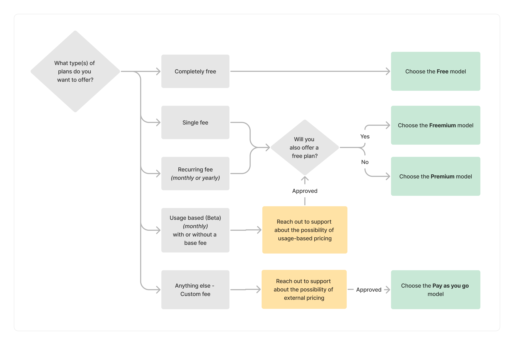
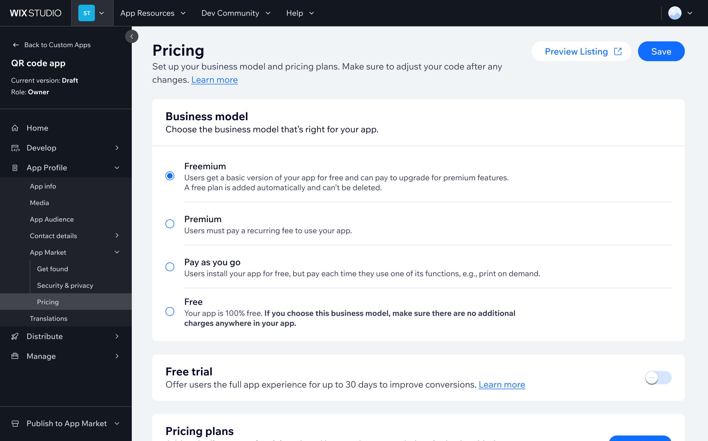
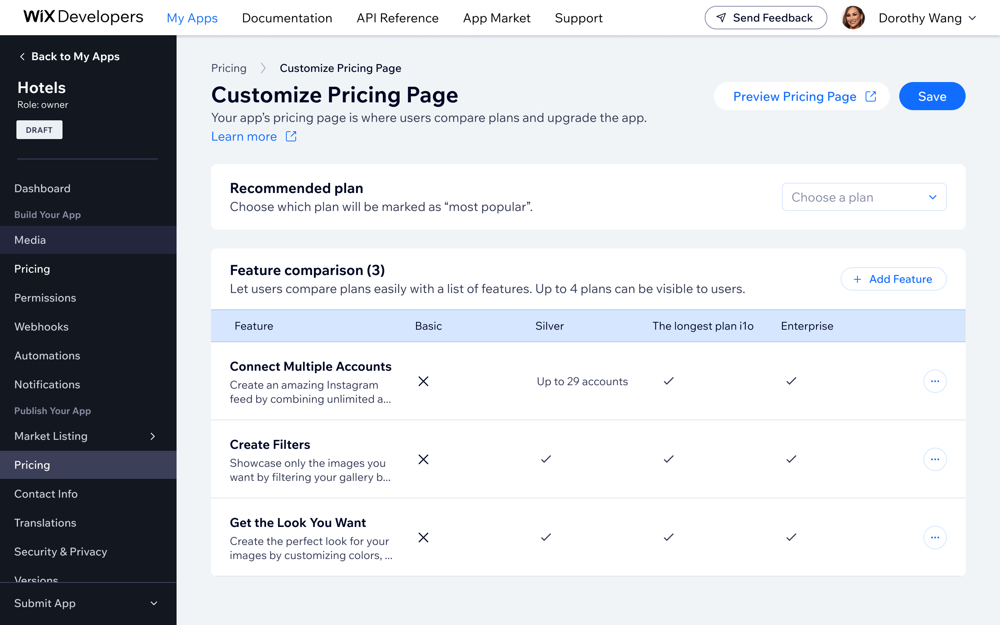
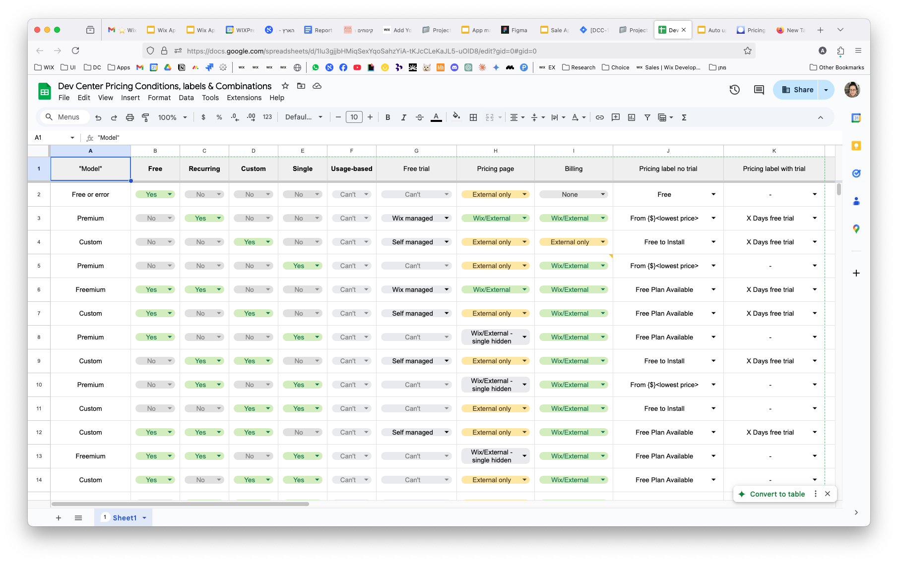
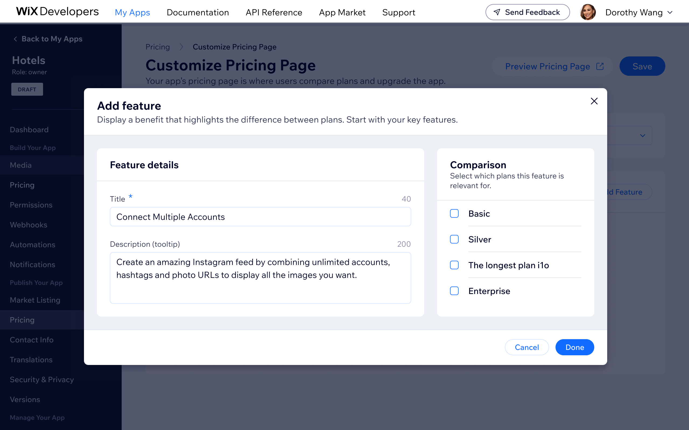
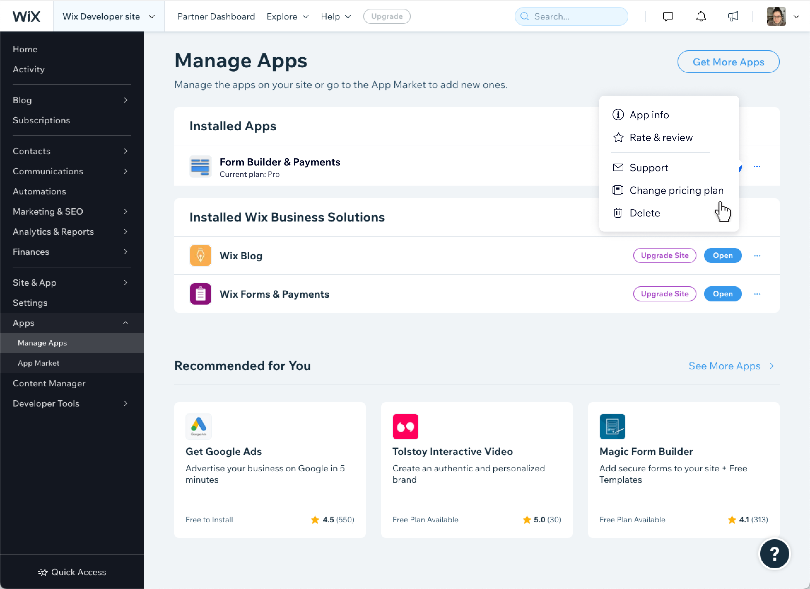
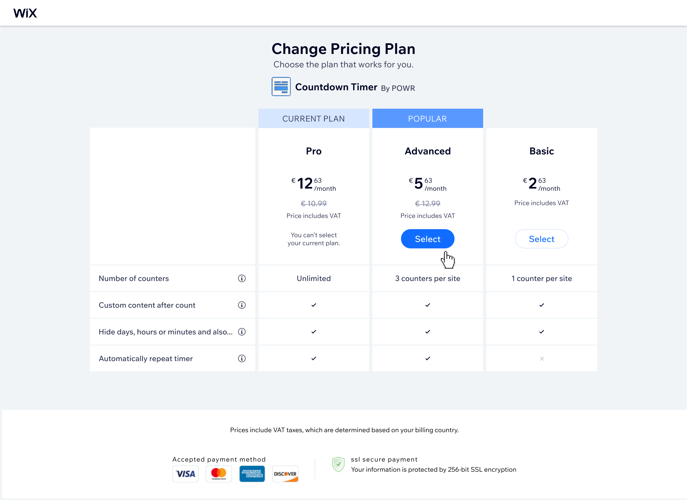
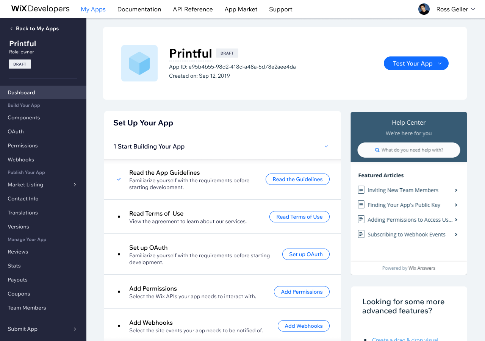

Pricing Page Projects
Pricing page design projects for third-party Wix apps
The Wix App Market pricing infrastructure is the foundation for how developers monetize their apps. I owned the long-term UX evolution across multiple shipping cycles - introducing flexible billing models, transforming plan creation from a modal to a full page, redesigning the pricing comparison interface, and leading the platform-wide migration to Wix-managed free trials.
1. Wix-managed Free Trial
App developers on the Wix App Market had to implement free trials themselves. Checkout occurred only after the trial ended, resulting in notable conversion drop-off. I led the end-to-end UX for a new Wix-managed Free Trial: $0 upfront checkout with auto-billing at trial end. Scope covered the full journey: package picker, checkout, manage-apps states, email notifications, and a migration plan for apps already on self-managed trials. The result was strong trial-to-paid conversion and significant subscription growth in the first year.



2. Adding Various Pricing Models (e.g., "Pay as You Go," "Metered Billing")
App developers were originally limited to fixed-price subscriptions - no usage-based models existed. I designed the UX for Pay-as-you-go and Metered Billing, tackling the challenge of helping developers identify the right model and configure valid plan combinations.
This produced a conditions matrix, a decision flowchart, and a business model selector, making the choice clear at a glance.




3. Revamping the “add a plan” page, which was a modal
The original "add a plan" experience was a compact modal - functional but constrained as plans grew more complex. I redesigned it as a dedicated full-page experience, giving each configuration step room to breathe and making the layout extensible for future features.


4. Revamping the Pricing Comparison Page
The pricing comparison page is the first thing users see when evaluating plans, so clarity and conversion matter. I redesigned it to improve plan differentiation, simplify the visual hierarchy, and give developers a customization surface to reflect their app's brand and structure.


5. Downgrade plan
Wix App Market users had no way to downgrade their app plan - the only option was to cancel and repurchase, which drove unnecessary churn and pushed some developers away from using Wix’s billing system altogether. There was also a legal obligation to offer downgrade functionality. I designed the downgrade plan flow, addressing the core challenge of enabling users to move to a cheaper plan while still nudging them toward better-value options.
The solution allows users to select a lower-tier plan while showing a clear overview of what they’re changing to - maintaining transparency without removing the upgrade nudge. The design also extends to external pricing pages with Wix checkout integration. Success metrics targeted a decrease in premium cancellations and increased developer adoption of Wix’s native billing system. (Project is a WIP - final results pending.)




Bottom line
Owning a surface through multiple shipping cycles means you accumulate real opinions about what was done well the first time and what you would approach differently with hindsight. The free trial migration was the most satisfying part: a structural change to how checkout worked that had immediate, measurable impact on conversion.